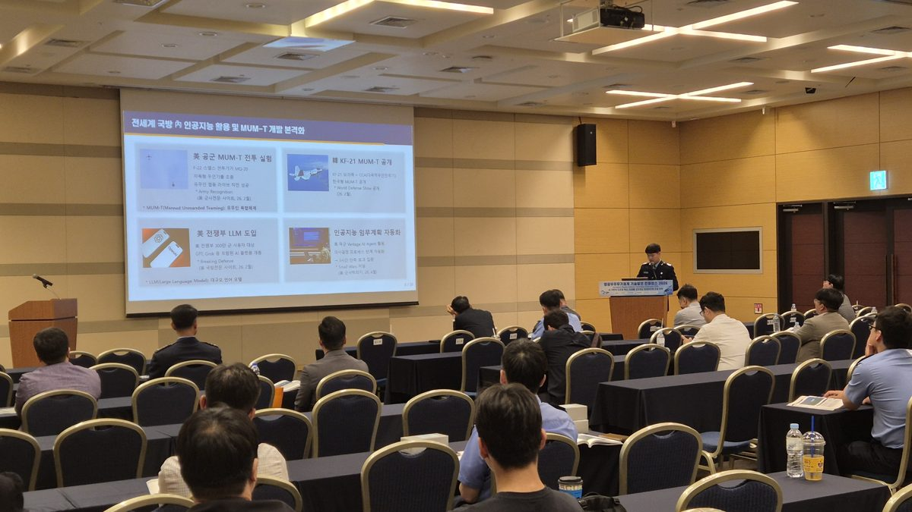
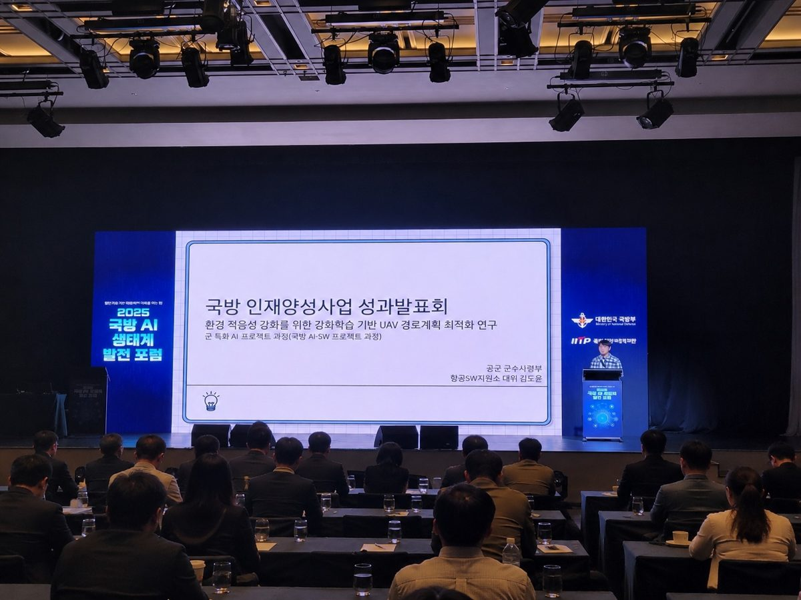
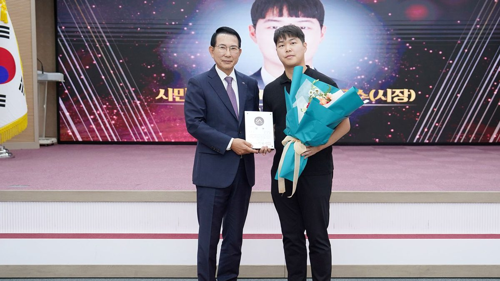

다중 UAV 항법
밀집 장애물 속 UAV 경로계획
선회율 제한이 있을 때 Reactive APF와 KMPL의 기체별 궤적이 어떻게 달라지는지 살펴봅니다.
궤적을 돌려보고, 추적 결과를 비교하고, 그 결과를 만든 연구를 읽어보세요.
선회율 제한이 있을 때 Reactive APF와 KMPL의 기체별 궤적이 어떻게 달라지는지 살펴봅니다.
하나의 화점에 번호가 계속 새로 붙는 문제를 다룹니다. 녹지 영상의 전체 생성 ID 수가 16개에서 4개로 줄어든 연구 성과를 확인하세요.
IMPS의 임무계획·비행 시뮬레이션부터 ATO-ACCEL의 명령서 생성·검증·브리핑까지, 두 프로토타입의 실제 화면을 살펴보세요.
잡초가 모여 있는 환경에서 UAV는 어디부터 탐색할까요? 저장된 두 사례의 좌표를 재생하며 기준 방식과 다중 스케일 어텐션 방식의 경로를 비교합니다.
연구의 근거와 기록을 확인하세요.
발표와 교류, 현장에서의 기록입니다.


